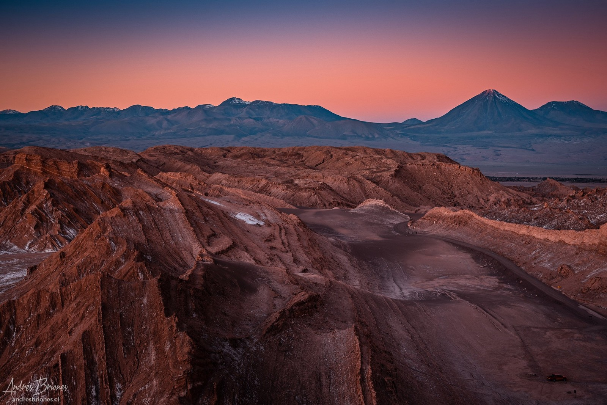
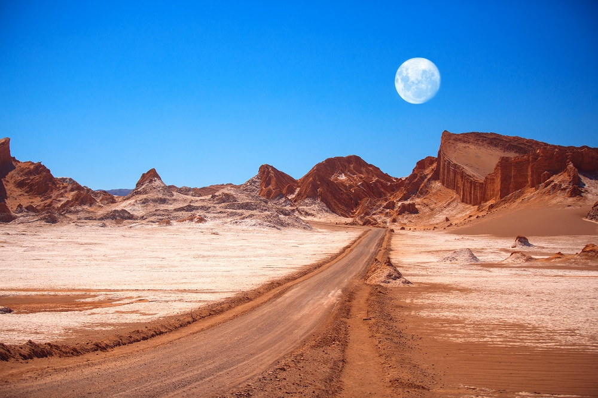

Atardecer
Este lugar nos ofrece una vista de esta magnitud con una combinación de colores nunca antes vista.
VER MASSe encuentra a 13 kilómetros (8 millas) al oeste de San Pedro de Atacama , en el norte de Chile en la Cordillera de la Sal , en el desierto de Atacama. Tiene varias formaciones de piedra y arena que han sido talladas por el viento y el agua. Tiene una impresionante gama de colores y texturas, pareciendo algo similar a la superficie de la luna. También hay lagos secos donde la composición de la sal forma una capa blanca que cubre la zona. Presenta diversos afloramientos salinos que parecen esculturas hechas por el hombre. También hay una gran variedad de cavernas. Cuando el sol se hunde define el paisaje mientras el viento sopla entre las rocas y el cielo pasa del color rosa al morado y finalmente al negro. El Valle de la Luna forma parte de la Reserva Nacional los Flamencos y fue declarado Santuario de la Naturaleza en 1982 por su entorno natural y extraño paisaje lunar, de donde deriva su nombre. El desierto de Atacama también se considera uno de los lugares más secos de la tierra, ya que algunas áreas no han recibido una sola gota de lluvia en cientos de años Los científicos probaron allí un prototipo de un vehículo explorador de Marte debido a los terrenos.
Este lugar nos ofrece una vista de esta magnitud con una combinación de colores nunca antes vista.
VER MASOjos del Salar, un baño en estas aguas magicas sera inolvidable
una caminata por este sendero junto a la laguna miscanti, disfrutando de un aire puro
un amanecer en los geyser del tatio será deslumbrante.
Un recorrido por el pueblo de machuca, el cual nos ofrece una fauna y flora maravillosa
calle caracoles un lugar lleno de cultura y diversidad.

valle de la luna, simplemEnte te sentiras como estar en otro planeta.

San Pedro de Atacama es una ciudad ubicada en una alta meseta árida en la Cordillera de los Andes del noreste chileno. Su espectacular paisaje circundante incluye desierto, salares, volcanes, géiseres y aguas termales. El Valle de la Luna en la Reserva Nacional los Flamencos es una depresión similar a la superficie lunar con formaciones rocosas poco comunes, una enorme duna de arena y montañas con manchas de color rosa.